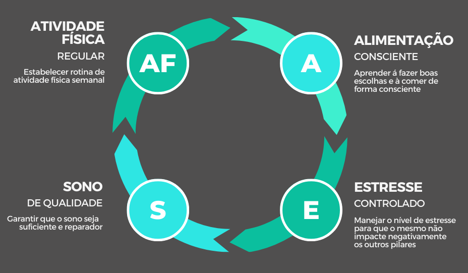

Metodologia
Com foco na mudança do Estilo de Vida, nossa metodologia se baseia em 4 pilares principais, que se relacionam entre si de forma contínua através de um círculo virtuoso:

Como funciona?
O método consiste em identificar as características e necessidades do aluno, definir em conjunto quais serão as prioridades á serem trabalhadas, estabelecer os objetivos, para então desenvolver um plano de ação estratégico com as metas á serem atingidas.
O plano busca a incorporação de novos hábitos e a mudança do estilo de vida de forma permanente, com estímulo à conscientização e ao desenvolvimento da autonomia, de forma que cada um seja responsável por sua evolução e o principal agente do seu processo de mudança.
A implementação do método é realizada em 5 etapas:
- Avaliação
- Definição de Metas
- Incorporação de novos hábitos
- Consolidação das mudanças
- Análise dos resultados